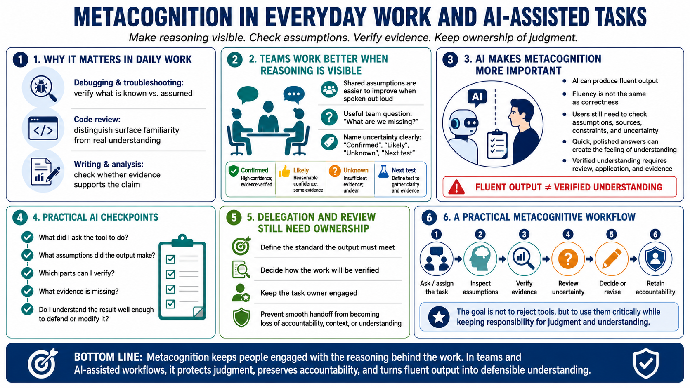

Metacognition in Work, Teams, and AI-Assisted Tasks
Connecting to LMS... Progress: in progress

Narration
Metacognition matters in day-to-day work because real tasks are full of assumptions. In debugging and troubleshooting, it helps you ask what you have actually verified and what you are only assuming. In code review, it helps you separate surface familiarity from real understanding of the data flow or risk. In writing and analysis, it helps you check whether the evidence supports the claim.
Teams benefit when reasoning is visible. Shared assumptions are easier to improve when people say them out loud. A useful team habit is asking, what are we missing? Another is naming uncertainty clearly: this is confirmed, this is likely, this is unknown, and this is the next test. These habits improve communication because they make confidence and evidence easier to inspect.
AI-assisted work makes metacognition even more important. AI tools can produce fluent output, but fluency is not the same as correctness. A user still needs to check assumptions, sources, constraints, and uncertainty. Tool fluency can create the feeling of understanding because the answer arrives quickly and sounds polished. Verified understanding requires review, application, and evidence.
A practical AI workflow includes metacognitive checkpoints. What did I ask the tool to do? What assumptions did the output make? Which parts can I verify? What evidence is missing? Do I understand the result well enough to defend or modify it? The goal is not to reject tools. The goal is to use them critically while keeping responsibility for judgment and understanding.
This is also useful for delegation and review. When you hand work to another person or a tool, keep track of what standard the output must meet and how you will verify it. Metacognition keeps the owner of the task engaged. It prevents a smooth handoff from becoming a loss of accountability, context, or understanding.